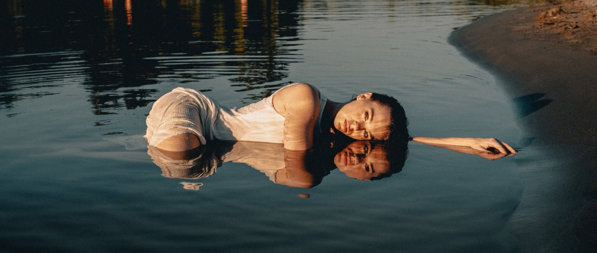

Portreti
Osobno fotkanje – za profilne fotografije, za uspomenu ili samo zato što želiš lijepe fotke sebe. Klijentice se vraćaju više puta, a za neke je to bilo prvo profesionalno fotkanje.
„Uvijek sam mislila da uopće nisam fotogenična, ali Andrea je toliko opuštena i draga da je meni cijelo fotkanje prošlo odlično!”Nera Ivković · Google recenzija
- Savjeti i prijedlozi prije fotkanja
- Pomoć oko poziranja tijekom fotkanja
- Opuštena i zabavna atmosfera
- Lokacija po dogovoru
